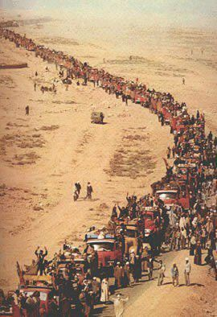
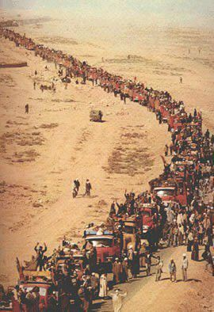

المسيرة الخضراء هي حدث تاريخي وطني قاده الملك الحسن الثاني في السادس من نوفمبر سنة 1975...
شكلت رمزاً للوحدة الوطنية، وأظهرت تلاحم الشعب والعرش في سبيل استكمال الوحدة الترابية للمملكة المغربية.
درس فريد في النضال السلمي والتلاحم الوطني، حيث جسدت قدرة الشعب المغربي على الدفاع عن أرضه بهدوء ووعي.
 
